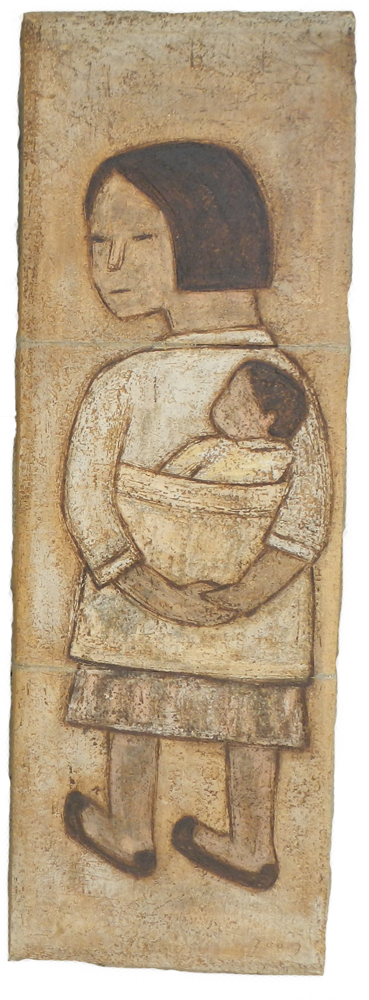

양구
사색
여행
이 가을, 바람이 불어오는 곳으로 간다.
50년간 사람 발길이 닿지 않은
숲에서는 걸음마다 나무 잔가지들이 머리를 쓰다듬고
가난한 화가는 가난한 영혼에게 괜찮다. 당신도 아름답다 말해 주었다.
두타연 Dutayoen
자연 그대로의 자연을 만나는 곳'지뢰'라는 말을 가끔 한다. 말하기란 너무 쉬운 일이어서, 살다가 일상의 어느 모퉁이에 잠깐 발이 걸렸을 때조차 지뢰라고, 세상이 지뢰밭이라고 내뱉는다. 진짜 지뢰는 멀쩡한 발목을 끊고, 심지어 목숨까지 앗아간다. 그 지뢰가 남한테만 약 100만개 매설되어 있다고 한다. 접경지대인 양구는 '지뢰 밀도'가 높은 땅이다. 숲에서도 한두 사람 걸을 만한 너비의 좁을 길 옆으로 지뢰라고 쓰인 빨간 표지판이 계속 따라붙었다. 위험해서 사람이 손대지 못한 숲은 아름답고 울창했다. 걷는 동안 말보다 생각이 고였다. 그야말로 가을날의 여행이다.
몇 년 전만 해도 두타연은 소문 같은 곳이었다. 휴전한 이듬해인 1954년 민간인 통제선이 생긴 뒤로 일반인은 밟을 수 없었기 때문이다. 민간인 출입 제한이 풀린 게 2003년이니 두타연은 50년 세월을 저 홀로 자연으로 존재했다. 개방하고 나서도 미리 신청한 사람에게만 방문을 허락하다 2013년에야 당일 출입 신청이 가능해졌다. 교통수단이 발달하여 오지다운 오지, 자연 그대로의 자연이 드물어진 시대에 두타연은 발길 하나도 조심스러울 만큼 소중한 가치를 지닌다.
이목정안내소에서 군인에게 신분증을 제시하고 위치 추적기를 받았다. 위험 지역이니 정해진 길을 벗어나지 말라는 안전 수칙도 들었따. 민통선 안에 들어왔다는 실감이 난다. 완전군장을 한 군인 무리가 지나간다. 무겁고 힘들 것이다. 어느새 올해도 10월이라고, 세월 참 빠르다는 평범한 생각조차 이들 앞에서는 미안하다. 숲길 양옆으로 녹슨 철조망이 끝없이 이어지고, 그 철조망에는 약 1미터에 한 개씩 지뢰 표지판이 달려있다. 비유로서 지뢰가 아니라 사람의 생명을 위협하는 실물 지뢰다.
땅을 팠으면 꽃 씨앗, 나무 씨앗 심어야 어울린 땅에 지뢰를 심었다니. 대결과 반목의 결과, 사람은 이 숲에서 손님 노릇만 한다. 주인은 온전히 자연이다. 사람이 물러나자 자연이 일했다. 나무는 무성하고 야생화가 흐드러졌다. 자연에게 빝진 기분이기도, 사람의 역사가 서글프기도 한데 나뭇가지가 자꾸만 머리를 쓰다듬는다. 아직 전쟁은 끝이 안 나 휴전인 상태지만 그래도 조금은 괜찮아졌다고 나무들이 말하는 듯 하다. 말도 못 하게 달고 깨끗한 공기를 머금은 바람이 불어왔다. 금강산에서 출발한 바람일지도 모른다.
- 이목정안내소 033-482-8449 | 비득안내소 033-481-9229 | 관광안내소 033-480-2675
- 이용시간 : 하절기(3~10월) 09:00~17:00 (최종 출입시간 16:00), 동절기(11~2월) 09:00~16:00 (최종 출입시간 15:00)
- ※ 최종 출입시간은 1시간 전까지 가능
가진 것을 죄다 쓸어 모아도 한 광주리밖에 안 되던 시절을
박수근은 애틋한 눈으로 그림에 담았다. 관객은 그의 그림을 자기도 모르게 오랫동안 쳐다본다.
그가 우리를 사랑했듯 우리도 그를 사랑하게 되는 것이다.
박수근 미술관 Park Soo Keun Museum
가난하고 위대한 화가를 위한 공간


{kind=link}
{kind=link}
{kind=link}
- 개관시간 : 09:00 ~ 18:00 (관람시간 1시간전입장) | 매주 월요일, 1월1일, 설날과 추석 오전 휴관 (월요일이 공휴일일 경우 화요일 휴관 ) | 문의 : 033-480-2655
- - 전시실 내에서는 사진 및 비디오 촬영과 휴대폰 사용을 금합니다.
- - 관람권은 당일에 한해 유효합니다.
- - 작품보존을 위해 조명을 일부 조절하였습니다.
- - 단체관람은 사전에 연락 주시기 바랍니다.
펀치볼 마을 Punch Bowl Village
비무장지대를 알리는 철조망 바로 옆, 을지 전망대에서 마을을 조망한다. 대한민국 최북단 전망대다.사방이 1000미터 넘는 산으로 둘러싸인 분지는 '펀치볼마을'이라는 이름 답지 않게 엄청나게 컸다.
국내외 온갖 곳을 여행해 어지간한 풍경엔 꿈쩍 안 할 사람도 엉덩이를 들썩일 만한 신비로운 절경이다.
코스 어디나 전쟁과 분단의 흔적이 깃들어 있는데, 자작나무 숲이 근사한 와우산 역시 그랬다.
전쟁 이후 이주한 사람들이 화전을 일궈 민둥산이 된 것을 둘레길을 내면서 자작나무를 심었다고 한다.
2000년, 조림하기 위해 땅을 팔 때 작은 야산 수준의 와우산에서 탄피가 두 가마니나 나왔다.
펀치볼둘레길은 단 한명의 탐방객이라도 마을 주민이 안내인으로 동행한다.
코스에서 벗어나면 지뢰 등 위험이 따르는 데다 마을 자체가 민통선 안에 있기 때문이다.
그 덕분에 다른 걷기 길이 주지 못하는 특별한 경험과 소회를 선사한다.
- 이목정안내소 033-482-8449 | 비득안내소 033-481-9229 | 관광안내소 033-480-2675
- 이용시간 : 하절기(3~10월) 09:00~17:00 (최종 출입시간 16:00), 동절기(11~2월) 09:00~16:00 (최종 출입시간 15:00)
- ※ 최종 출입시간은 1시간 전까지 가능
이 가을, 가장 가고 싶은 여행지가 어디냐는 물음에 이렇게 대답하겠다.
바람이 불어오는 곳이라고.
양구 트래블 가이드

08:00~09:16
용산발 남춘천행
ITX-청춘
09:50~10:40
춘천시외버스터미널발
양구행 시외버스
11:00
양구백자박물관
13:30
두타연갤러리
두타연 트레킹
19:00
국토정중앙천문대
09:00 박수근미술관

13:00
펀치볼마을과
DMZ펀치볼둘레길
17:00
양구자연생태공원
19:00~19:50
양구시외버스터미널발
춘천행 시외버스
20:03~21:16
남춘천발 용산행
ITX-청춘
- 문의 : 033-253-4567